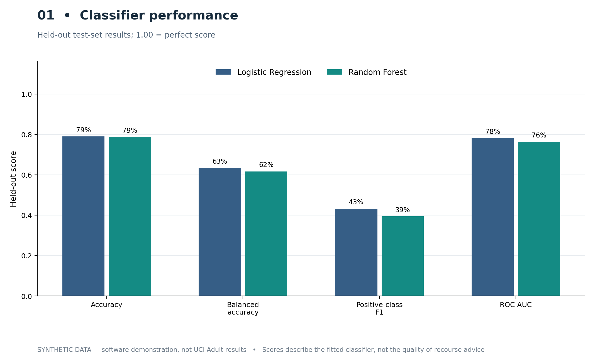
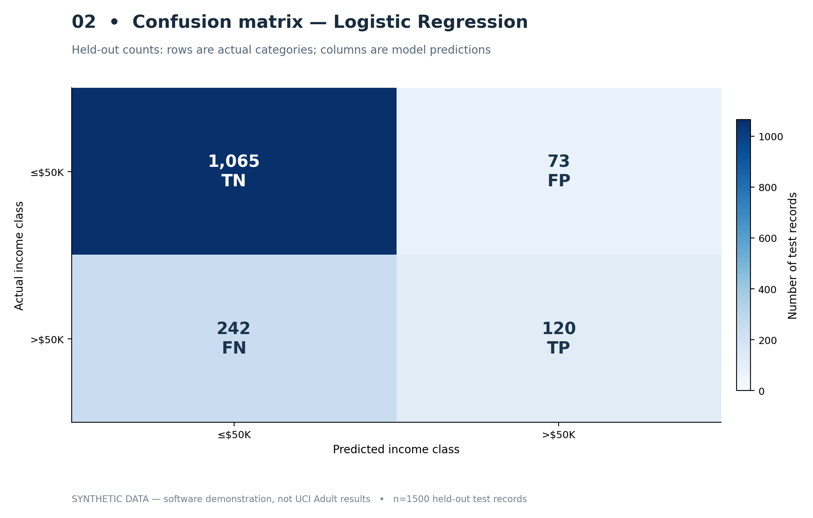
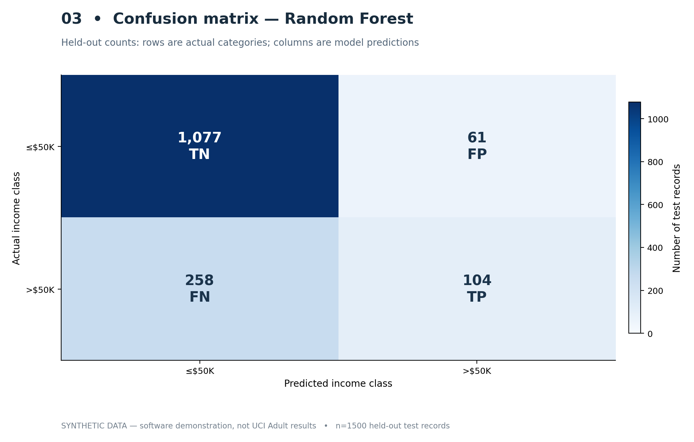
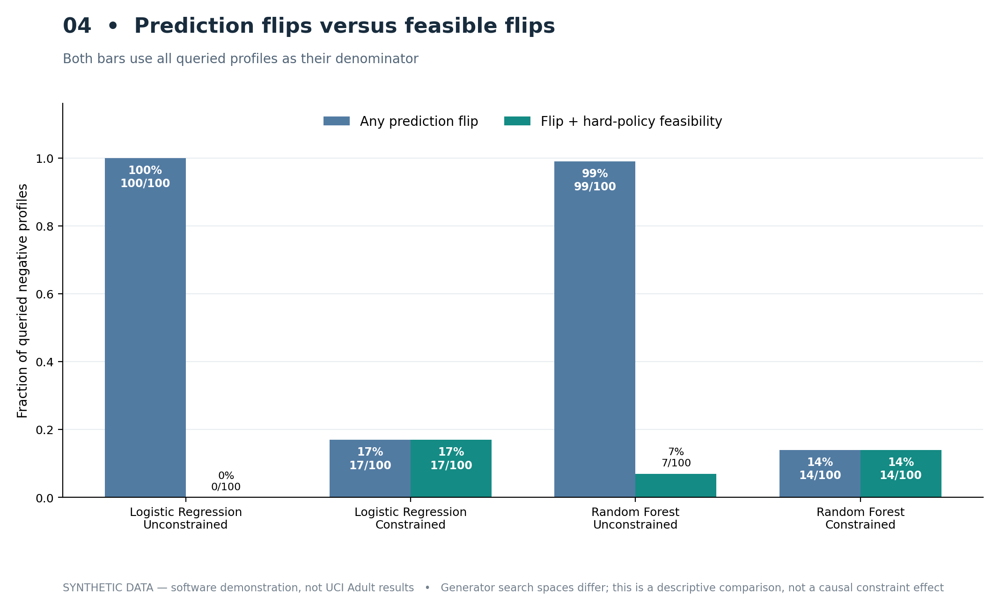
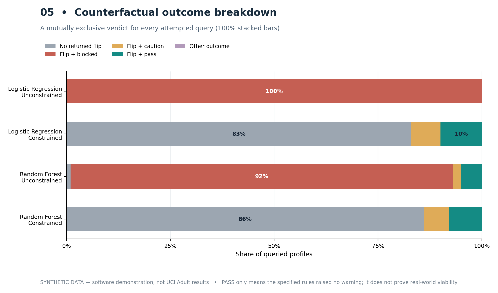
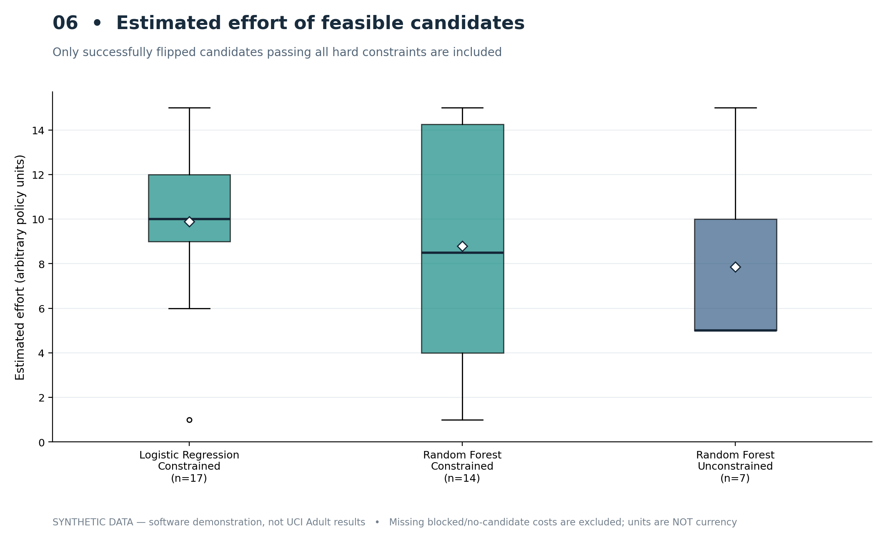
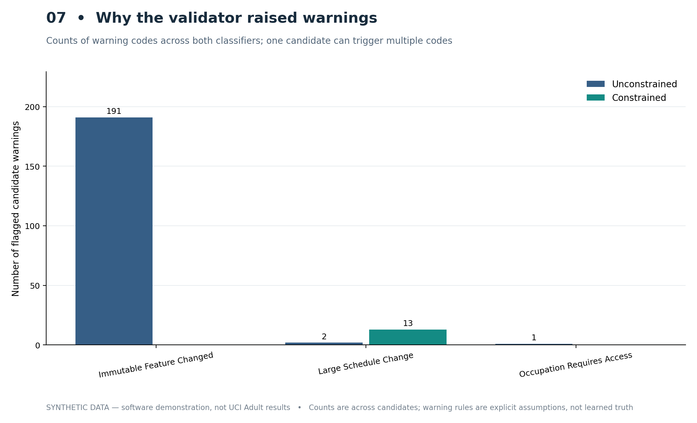
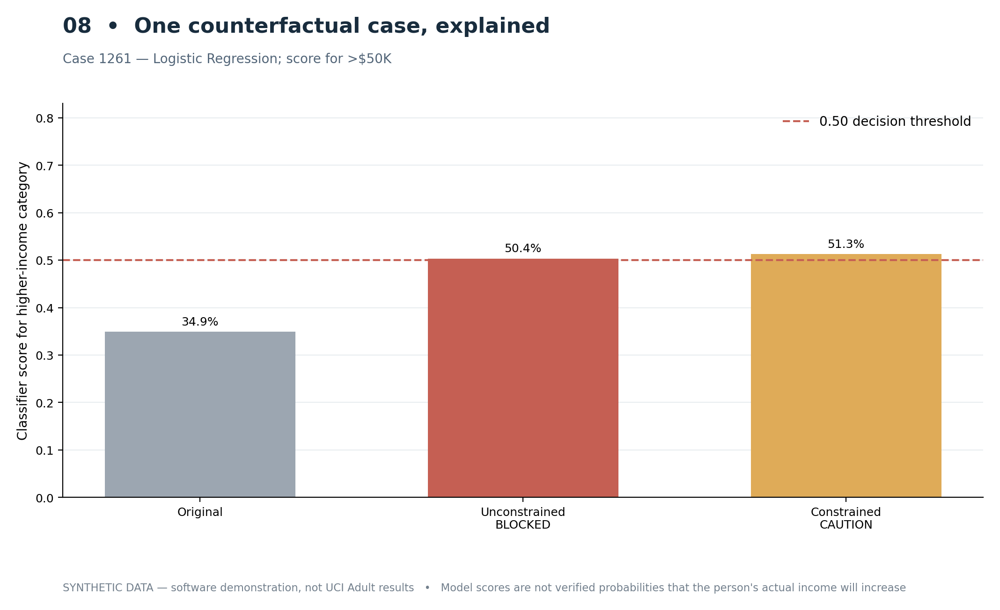

CS725 — Counterfactual experiment results
SYNTHETIC DATA — software demonstration, not UCI Adult results
Charts were generated from saved CSV/JSON outputs, not hand-entered numbers.
Interpretation: flips do not establish real-world effects; constrained and unconstrained starter searches have different candidate sets.


Confusion matrix for Logistic Regression


Confusion matrix for Random Forest


Predicted class flip versus hard-constraint passing


Status of every counterfactual query


Distribution of estimated effort for feasible flips


Frequency of validator warning codes

